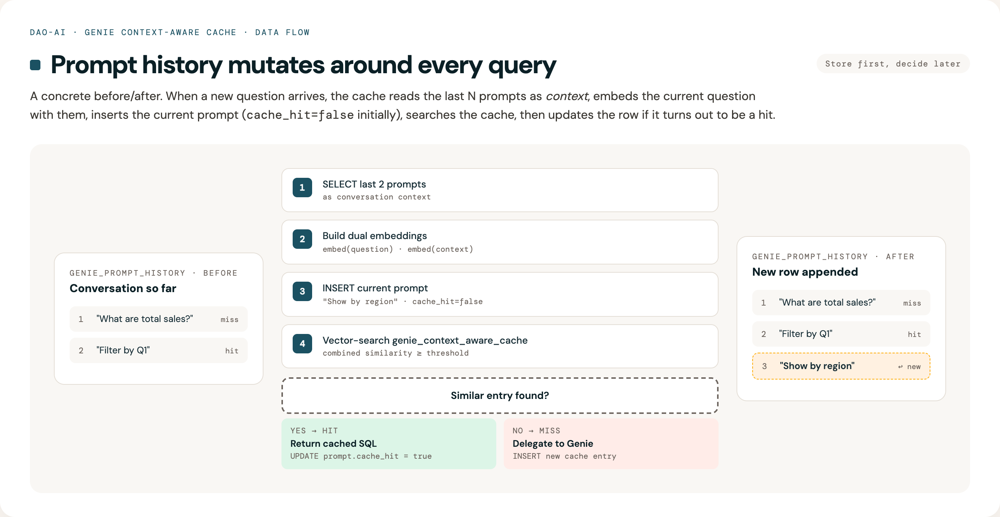

Genie Context-Aware Cache - Prompt History¶
Config field naming. This document uses the
context_aware_cache_parametersfield name from the originalcreate_genie_toolkitfactory args. On the first-classtype: genietool shape, the equivalent field iscontext_aware_cache(no_parameterssuffix). Both shapes accept the same nested fields described below.
Overview¶
The Genie context-aware cache now includes prompt history tracking to solve the conversation continuity problem where cache hits created "holes" in conversation context.
Problem Solved¶
Before (Without Prompt History)¶
User: "What are total sales?"
→ Cache MISS → Genie API → Response
→ Genie records this in conversation history ✅
User: "Filter by region"
→ Cache HIT → Re-execute SQL → Response
→ Genie NEVER sees this question ❌
User: "What's the total for that?"
→ Cache MISS → Genie API
→ Genie has no context for "that" ❌
→ Query fails or returns wrong results
After (With Prompt History)¶
User: "What are total sales?"
→ Cache MISS → Genie API → Response
→ Stored in local prompt history ✅
User: "Filter by region"
→ Cache HIT → Re-execute SQL → Response
→ Stored in local prompt history ✅
→ Context embeddings include this prompt ✅
User: "What's the total for that?"
→ Context includes BOTH previous prompts ✅
→ Context-aware matching considers full conversation context ✅
→ Returns accurate results
Architecture¶
Component Interaction Diagram¶
sequenceDiagram
participant Client
participant ContextAwareCache
participant PromptHistory as genie_prompt_history
participant CacheTable as genie_context_aware_cache
participant Genie
Client->>ContextAwareCache: ask_question(question, conv_id)
ContextAwareCache->>PromptHistory: 1. Get PREVIOUS prompts
PromptHistory-->>ContextAwareCache: Recent prompts
ContextAwareCache->>ContextAwareCache: 2. Build embeddings with context
ContextAwareCache->>PromptHistory: 3. Store CURRENT prompt
Note over ContextAwareCache,PromptHistory: cache_hit=false initially
ContextAwareCache->>CacheTable: 4. Search for similar entry
alt Cache Hit
CacheTable-->>ContextAwareCache: Cached SQL + message_id + entry_id
ContextAwareCache->>PromptHistory: 5. Update cache_hit=true, cache_entry_id
ContextAwareCache-->>Client: Cached result (incl. message_id, cache_entry_id)
else Cache Miss
ContextAwareCache->>Genie: Delegate question
Genie-->>ContextAwareCache: Fresh SQL + message_id
ContextAwareCache->>CacheTable: Store new entry (incl. message_id)
ContextAwareCache-->>Client: Fresh result (incl. message_id)
endTwo Separate Tables¶
1. genie_prompt_history (UPDATED)¶
Stores ALL user prompts (cache hits and misses)
CREATE TABLE genie_prompt_history (
id SERIAL PRIMARY KEY,
genie_space_id TEXT NOT NULL,
conversation_id TEXT NOT NULL,
prompt TEXT NOT NULL,
cache_hit BOOLEAN DEFAULT FALSE,
cache_entry_id INTEGER, -- NEW: Links to cache entry on hit
created_at TIMESTAMP WITH TIME ZONE DEFAULT CURRENT_TIMESTAMP,
INDEX idx_conversation (genie_space_id, conversation_id, created_at DESC),
INDEX idx_space_recent (genie_space_id, created_at DESC),
INDEX idx_cache_entry (cache_entry_id) WHERE cache_entry_id IS NOT NULL
)
Purpose: Track conversation context for context-aware matching
Storage: ~200 bytes per prompt (text only)
New Field cache_entry_id: Links prompts to their serving cache entry. This enables:
- Tracing which cache entry served a particular prompt
- Analytics on cache entry reuse patterns
- Debugging cache behavior
2. genie_context_aware_cache (EXISTING, UPDATED)¶
Stores SQL queries + embeddings (cache misses only)
CREATE TABLE genie_context_aware_cache (
id SERIAL PRIMARY KEY,
genie_space_id TEXT NOT NULL,
question TEXT NOT NULL,
conversation_context TEXT,
question_embedding vector(1024),
context_embedding vector(1024),
sql_query TEXT NOT NULL,
description TEXT,
conversation_id TEXT,
message_id TEXT, -- NEW: Original Genie message ID (for feedback)
created_at TIMESTAMP WITH TIME ZONE DEFAULT CURRENT_TIMESTAMP
)
Purpose: Store SQL + embeddings for context-aware similarity search
Storage: ~2KB per entry (embeddings are large)
New Field message_id: Stores the original Genie API message ID. This enables:
- Sending feedback to Genie API even for cache hits
- Tracing cache entries back to their original Genie responses
Data Flow¶

Dual Embedding Architecture¶
The context-aware cache uses two separate embeddings that are compared independently:
1. Question Embedding¶
Input: Current prompt only
Purpose: Match question intent/semantics
2. Context Embedding¶
Input: Previous prompts only
context = "Previous: What are total sales?\nPrevious: Filter by Q1"
context_embedding = embed(context)
Purpose: Match conversation context
Cache Hit Criteria¶
Similarity is computed using cosine similarity (via pg_vector's <=> operator). Both similarities must exceed thresholds:
question_similarity >= 0.85 (default)
AND
context_similarity >= 0.80 (default, with bidirectional skip)
Bidirectional context-skip: The context threshold is automatically skipped when either side has no conversation context. This handles two scenarios: 1. The cached entry was stored without conversation history (first message) 2. The current query has no context (new conversation)
In both cases, the match depends on question similarity alone -- this prevents false misses when context is unavailable.
Combined score (for ranking top-K candidates):
Two-Phase Search (PostgreSQL)¶
For scalability, the PostgreSQL cache uses a two-phase search:
Phase 1 (SQL): Uses pg_vector's native ORDER BY embedding <=> query LIMIT K pattern with SET LOCAL ivfflat.probes for index-optimized approximate nearest neighbor search. Retrieves the top-K candidates by question distance.
Phase 2 (Python): Computes combined similarity on the K candidates, applies threshold checks (question, context with bidirectional skip, TTL), and picks the best match.
This avoids materializing all rows in a CTE and allows the ivfflat index to do the heavy lifting.
Context Window Example¶
Scenario: 5 prompts with context_window_size=4 (default)
┌─────────────────────────────────────────────────────────────────┐
│ Prompt 1: "What are total sales?" │
├─────────────────────────────────────────────────────────────────┤
│ Previous prompts: (none) │
│ Context embedding: zero vector │
│ Result: Cache MISS → Call Genie │
│ Stored: [P1] │
└─────────────────────────────────────────────────────────────────┘
┌─────────────────────────────────────────────────────────────────┐
│ Prompt 2: "Filter by Q1" │
├─────────────────────────────────────────────────────────────────┤
│ Previous prompts: [P1] │
│ Context: "Previous: What are total sales?" │
│ Result: Cache MISS → Call Genie │
│ Stored: [P1, P2] │
└─────────────────────────────────────────────────────────────────┘
┌─────────────────────────────────────────────────────────────────┐
│ Prompt 3: "Show top 5 regions" │
├─────────────────────────────────────────────────────────────────┤
│ Previous prompts: [P1, P2] (window full) │
│ Context: "Previous: What are total sales? │
│ Previous: Filter by Q1" │
│ Result: Cache MISS → Call Genie │
│ Stored: [P1, P2, P3] │
└─────────────────────────────────────────────────────────────────┘
┌─────────────────────────────────────────────────────────────────┐
│ Prompt 4: "Compare to last year" │
├─────────────────────────────────────────────────────────────────┤
│ Previous prompts: [P2, P3] ← Sliding window (LIMIT 2) │
│ Context: "Previous: Filter by Q1 │
│ Previous: Show top 5 regions" │
│ Result: Cache MISS → Call Genie │
│ Stored: [P1, P2, P3, P4] │
│ Note: P1 not in context (window size=2) │
└─────────────────────────────────────────────────────────────────┘
┌─────────────────────────────────────────────────────────────────┐
│ Prompt 5: "What are total sales?" (SAME as P1) │
├─────────────────────────────────────────────────────────────────┤
│ Previous prompts: [P3, P4] ← Sliding window │
│ Context: "Previous: Show top 5 regions │
│ Previous: Compare to last year" │
│ │
│ Similarity Check: │
│ question_similarity: HIGH (same question as P1) │
│ context_similarity: LOW (different context) │
│ │
│ Result: Cache MISS ← Context doesn't match P1's context │
│ Stored: [P1, P2, P3, P4, P5] │
└─────────────────────────────────────────────────────────────────┘
Key Insight: The same question in different conversation contexts produces different cache entries because both question AND context embeddings must match.
Configuration¶
Prompt history is always enabled - it's fundamental to maintaining accurate conversation context for context-aware matching.
genie_tools:
my_genie_tool:
genie_room:
space_id: my-space-id # or omit and use name instead
# name: "My Genie Space" # resolves space_id automatically
context_aware_cache_parameters:
database:
project: retail-consumer-goods # Lakebase
warehouse:
warehouse_id: my-warehouse-id # or omit and use name instead
# name: "My Warehouse" # resolves warehouse_id automatically
# Prompt history configuration
prompt_history_table: genie_prompt_history # Table for prompt storage
context_window_size: 4 # Use last 4 prompts for context (default)
max_prompt_history_length: 50 # Max prompts per conversation (enforced)
prompt_history_ttl_seconds: null # TTL for prompts (null = use cache TTL)
use_genie_api_for_history: false # Fallback to Genie API if local empty
# Similarity search config
similarity_threshold: 0.85
context_similarity_threshold: 0.80
question_weight: 0.6
context_weight: 0.4
# IVFFlat index tuning (all optional -- auto-computed by default)
# ivfflat_lists: null # Auto: max(100, sqrt(row_count))
# ivfflat_probes: null # Auto: max(10, sqrt(lists))
# ivfflat_candidates: 20 # Top-K candidates for Python reranking
Configuration Parameters¶
| Parameter | Default | Description |
|---|---|---|
prompt_history_table |
genie_prompt_history |
Table name for storing prompts |
context_window_size |
4 |
Number of previous prompts to include in context |
max_prompt_history_length |
50 |
Maximum prompts to keep per conversation |
prompt_history_ttl_seconds |
null |
TTL for prompts (null uses cache TTL) |
use_genie_api_for_history |
false |
Fallback to Genie API if local history is empty |
ivfflat_lists |
null (auto) |
IVF index lists. Auto-computed as max(100, sqrt(row_count)) |
ivfflat_probes |
null (auto) |
IVF probes per query. Auto-computed as max(10, sqrt(lists)) |
ivfflat_candidates |
20 |
Top-K candidates retrieved before Python-side reranking |
Usage Example¶
from dao_ai.config import (
DatabaseModel,
GenieContextAwareCacheParametersModel,
WarehouseModel,
)
from databricks.sdk import WorkspaceClient
from databricks_ai_bridge.genie import Genie
from dao_ai.genie.cache import PostgresContextAwareGenieService
from dao_ai.genie.core import GenieService
# Setup
workspace_client = WorkspaceClient()
database = DatabaseModel(
project="retail-consumer-goods", # autoscaling Lakebase
# project="retail-consumer-goods"
)
# Provide warehouse_id directly, or just name to resolve the ID automatically
warehouse = WarehouseModel(
warehouse_id="your-warehouse-id", # or use: name="Your Warehouse Name"
workspace_client=workspace_client,
)
# Configure cache (prompt history is always enabled)
parameters = GenieContextAwareCacheParametersModel(
database=database,
warehouse=warehouse,
context_window_size=2, # Use last 2 prompts for context
max_prompt_history_length=50, # Keep last 50 prompts per conversation
)
# Initialize
genie = Genie(space_id="my-space")
genie_service = GenieService(genie)
cache_service = PostgresContextAwareGenieService(
impl=genie_service,
parameters=parameters,
workspace_client=workspace_client,
).initialize()
# Multi-turn conversation
conv_id = "my-conversation"
# Prompt 1
result1 = cache_service.ask_question(
"What are total sales?",
conversation_id=conv_id
)
# → Cache MISS, calls Genie, stores prompt in history
# Prompt 2
result2 = cache_service.ask_question(
"Filter by Q1",
conversation_id=conv_id
)
# → Cache MISS, calls Genie, stores prompt
# → Context now includes P1
# Prompt 3
result3 = cache_service.ask_question(
"Show by region",
conversation_id=conv_id
)
# → Cache HIT (if similar to previous query)
# → Stored in prompt history with cache_hit=true
# → Context includes [P1, P2]
# Inspect prompt history
prompts = cache_service._get_local_prompt_history(conv_id, max_prompts=10)
print(f"Conversation history: {prompts}")
# Output: ['What are total sales?', 'Filter by Q1', 'Show by region']
Importing Historical Conversations with from_space()¶
The from_space() method allows you to pre-populate the cache from existing Genie space conversations. This is useful for:
- Cache warming: Avoid cold-start latency by importing historical queries
- Migration: Transfer conversation history when setting up a new cache instance
- Analytics: Build a cache from production usage patterns
Usage¶
from datetime import datetime, timedelta
# Basic usage - import all conversations from the current space
cache_service.from_space()
# Import from a specific Genie space
cache_service.from_space(space_id="01f0c482e842191587af6a40ad4044d8")
# Import only recent conversations (last 30 days)
cache_service.from_space(
from_datetime=datetime.now() - timedelta(days=30),
)
# Import with all filters
cache_service.from_space(
space_id="my-space-id", # Optional: defaults to self.space_id
include_all_messages=True, # Include all users' conversations
from_datetime=datetime(2024, 1, 1), # Only messages after this date
to_datetime=datetime(2024, 6, 30), # Only messages before this date
max_messages=1000, # Limit total messages imported
)
Parameters¶
| Parameter | Default | Description |
|---|---|---|
space_id |
self.space_id |
Genie space ID to import from |
include_all_messages |
True |
If True, fetch all users' conversations |
from_datetime |
None |
Only include messages after this time |
to_datetime |
None |
Only include messages before this time |
max_messages |
None |
Limit to last N messages (most recent first) |
What Gets Imported¶
- Prompt history table: All user messages are stored in
genie_prompt_history - Cache embeddings table: Messages with SQL query attachments are embedded and stored in the cache
Uses ON CONFLICT DO NOTHING to safely skip duplicate entries, making it safe to run multiple times.
Requirements¶
- Requires a
workspace_clientto be provided when creating the cache service - The workspace client must have permission to access the Genie space
# workspace_client is required for from_space()
cache_service = PostgresContextAwareGenieService(
impl=genie_service,
parameters=parameters,
workspace_client=workspace_client, # Required!
).initialize()
cache_service.from_space() # Now works
Performance Considerations¶
- For large spaces (1000+ messages), use
max_messagesto limit import size - Use date filters (
from_datetime,to_datetime) to import only relevant history - The method returns
selffor method chaining:
Performance Benefits¶
Metrics¶
| Operation | Before | After | Improvement |
|---|---|---|---|
| Context retrieval | 200-500ms (Genie API) | 10-20ms (Local DB) | 10-25x faster |
| Cache HIT latency | 360-820ms | 180-360ms | ~50% faster |
| Storage per prompt | N/A | ~200 bytes | Minimal |
Why It's Faster¶
- Local DB queries: Postgres/Lakebase queries are much faster than Genie API calls
- SQL LIMIT optimization: Only fetches exactly what's needed (e.g., LIMIT 3)
- No network overhead: Local DB vs external API
- Includes cache hits: Doesn't need Genie API for cache hit prompts
Sequence Diagram¶
sequenceDiagram
participant User
participant Cache as ContextAwareCache
participant PromptDB as genie_prompt_history
participant CacheDB as genie_context_aware_cache
participant Genie as Genie API
User->>Cache: "Show by region"
Note over Cache,PromptDB: Step 1: Get PREVIOUS prompts
Cache->>PromptDB: SELECT prompt<br/>LIMIT 2<br/>(window_size=2)
PromptDB-->>Cache: [P1: "What are sales?",<br/>P2: "Filter by Q1"]
Note over Cache: Step 2: Build dual embeddings
Cache->>Cache: question_embedding =<br/>embed("Show by region")
Cache->>Cache: context_embedding =<br/>embed("Previous: P1<br/>Previous: P2")
Note over Cache,PromptDB: Step 3: Store current prompt
Cache->>PromptDB: INSERT (prompt="Show by region",<br/>cache_hit=false)
PromptDB-->>Cache: OK
Note over Cache,CacheDB: Step 4: Search cache
Cache->>CacheDB: Vector search<br/>(question_emb + context_emb)
CacheDB-->>Cache: Best match + scores
alt Cache HIT
Cache->>CacheDB: Re-execute cached SQL
CacheDB-->>Cache: Fresh results
Cache->>PromptDB: UPDATE cache_hit=true
PromptDB-->>Cache: OK
Cache-->>User: Response (cached)
else Cache MISS
Cache->>Genie: ask_question()
Genie-->>Cache: SQL + results
Cache->>CacheDB: INSERT SQL + embeddings
CacheDB-->>Cache: OK
Cache-->>User: Response (from Genie)
endContext Window Behavior¶
With context_window_size=4 (default):
Conversation: [P1, P2, P3, P4, P5, P6, ...]
When processing P6:
1. SELECT last 4: Returns [P2, P3, P4, P5] ← LIMIT 4
2. Context = "Previous: P2\nPrevious: P3\nPrevious: P4\nPrevious: P5"
3. Embed P6 with context of [P2, P3, P4, P5]
4. Store P6
Result: Sliding window of last 4 prompts
Efficiency: Constant time O(window_size), not O(total_prompts)
Maintenance and Cleanup¶
Automatic Prompt History Cleanup¶
The context-aware cache automatically maintains prompt history in two ways:
1. Per-Conversation Length Limit¶
After storing each prompt, the cache enforces max_prompt_history_length by deleting the oldest prompts:
-- Automatically executed after each INSERT
DELETE FROM genie_prompt_history
WHERE conversation_id = ?
AND created_at < (
SELECT created_at FROM genie_prompt_history
ORDER BY created_at DESC
LIMIT 1 OFFSET 49 -- max_prompt_history_length - 1
)
This keeps each conversation to at most 50 prompts (by default).
2. TTL-Based Cleanup¶
When calling invalidate_expired(), both cache entries and prompt history are cleaned up:
# Clean up expired cache entries AND prompt history
result = cache_service.invalidate_expired()
# Returns: {"cache": 5, "prompt_history": 12}
Uses prompt_history_ttl_seconds if set, otherwise uses the cache's time_to_live_seconds.
Error Resilience¶
Prompt history operations are non-critical - failures are logged but don't crash requests:
_store_user_prompt()- INSERT failures are caught and logged_update_prompt_cache_hit()- UPDATE failures are caught and logged_enforce_prompt_history_limit()- DELETE failures are caught and logged
This ensures the primary caching functionality continues even if prompt history has issues.
Configuration Options¶
class GenieContextAwareCacheParametersModel:
# Prompt history configuration (always enabled)
prompt_history_table: str = "genie_prompt_history"
"""Table name for storing prompt history"""
max_prompt_history_length: int = 50
"""Maximum prompts to keep per conversation (enforced automatically)"""
prompt_history_ttl_seconds: int | None = None
"""TTL for prompt history cleanup (None = use cache TTL)"""
use_genie_api_for_history: bool = False
"""Fallback to Genie API if local history empty (default: False)"""
context_window_size: int = 4
"""Number of previous prompts to include in context embeddings"""
max_context_tokens: int = 2000
"""Maximum tokens in context to prevent extremely long embeddings"""
# IVFFlat index tuning for pg_vector (auto-computed when None)
ivfflat_lists: int | None = None
"""Number of IVF lists. None = auto-computed as max(100, sqrt(row_count))"""
ivfflat_probes: int | None = None
"""Lists to probe per query. None = auto-computed as max(10, sqrt(lists))"""
ivfflat_candidates: int = 20
"""Top-K candidates for Python-side reranking"""
API Methods¶
Public Methods¶
# Retrieve prompt history for a conversation
prompts: list[str] = cache_service._get_local_prompt_history(
conversation_id="conv-123",
max_prompts=10
)
# Clear all cache entries (prompts are NOT cleared automatically)
cache_service.clear() # Only clears context_aware_cache table
# Get cache entries with optional filtering
entries = cache_service.get_entries(
limit=100, # Maximum entries to return
offset=0, # Skip entries for pagination
include_embeddings=True, # Include embedding vectors
conversation_id="conv-1", # Filter by conversation
created_after=datetime(2024, 1, 1), # Time filter
created_before=datetime(2024, 12, 31),
question_contains="sales", # Text search (case-insensitive)
)
get_entries() Method¶
The get_entries() method retrieves cache entries for inspection, debugging, or generating evaluation datasets for threshold optimization.
def get_entries(
self,
limit: int | None = None,
offset: int | None = None,
include_embeddings: bool = False,
conversation_id: str | None = None,
created_after: datetime | None = None,
created_before: datetime | None = None,
question_contains: str | None = None,
) -> list[dict[str, Any]]:
Parameters:
| Parameter | Type | Default | Description |
|---|---|---|---|
limit |
int \| None |
None |
Maximum entries to return |
offset |
int \| None |
None |
Skip entries for pagination |
include_embeddings |
bool |
False |
Include embedding vectors (large) |
conversation_id |
str \| None |
None |
Filter by conversation ID |
created_after |
datetime \| None |
None |
Only entries after this time |
created_before |
datetime \| None |
None |
Only entries before this time |
question_contains |
str \| None |
None |
Case-insensitive text search |
Returns:
Each entry dict contains:
- id: Cache entry ID (int for PostgreSQL, None for in-memory)
- question: The cached question text
- conversation_context: Prior conversation context string
- sql_query: The cached SQL query
- description: Query description
- conversation_id: The conversation ID
- created_at: Entry creation timestamp
- question_embedding: (only if include_embeddings=True)
- context_embedding: (only if include_embeddings=True)
Example: Generate evaluation dataset
from dao_ai.genie.cache.context_aware.optimization import generate_eval_dataset_from_cache
# Get entries with embeddings from your cache
entries = cache_service.get_entries(include_embeddings=True, limit=100)
# Generate evaluation dataset for threshold optimization
eval_dataset = generate_eval_dataset_from_cache(
cache_entries=entries,
embedding_model="databricks-gte-large-en",
num_positive_pairs=50,
num_negative_pairs=50,
dataset_name="my_cache_eval",
)
Internal Methods (Not Exposed)¶
_store_user_prompt(): Store prompt in history_update_prompt_cache_hit(): Update cache hit flag_create_prompt_history_table(): Create schema
Migration and Fallback¶
First Request Behavior¶
Scenario: Existing conversation in Genie, new prompt arrives
# First prompt to cache service
result = cache_service.ask_question(
"Filter by region",
conversation_id="existing-genie-conv"
)
Flow:
1. SELECT from local prompt history → Empty (first time)
2. If use_genie_api_for_history=True: Fall back to Genie API
3. Otherwise: Use empty context
4. Store current prompt
5. Process normally
Recommendation¶
For existing conversations, either:
- Option A: Set use_genie_api_for_history=True for seamless migration
- Option B: Run migration script to import existing prompts
- Option C: Accept first prompt has no context (simplest)
Why Store User Prompts Only?¶
What We Store¶
✅ User prompts (essential for context)
What We DON'T Store (and why)¶
❌ Assistant responses: Not needed for context-aware matching
❌ SQL queries: Already in genie_context_aware_cache table (would be duplication)
❌ Result data: Re-executed on cache hit for fresh data
❌ Descriptions: Not used in context embeddings
Result: 50% storage savings and simpler schema
Testing¶
Unit Tests¶
Coverage: - ✅ Table creation - ✅ Prompt storage - ✅ History retrieval with LIMIT - ✅ Cache hit flag updates - ✅ Context excludes current prompt - ✅ Sliding window behavior - ✅ Configuration validation
Integration Test (Manual)¶
# Run against real Lakebase (requires credentials)
pytest tests/dao_ai/genie/test_prompt_history.py::TestPromptHistoryIntegration -v
Troubleshooting¶
Issue: Context includes current prompt¶
Symptom: Context-aware matching behaves oddly Cause: Storing prompt before retrieving history Fix: Ensure order is: SELECT → BUILD → INSERT
Issue: No conversation context¶
Symptom: context_embedding is always zero vector
Check:
1. Is store_prompt_history=True?
2. Is this the first prompt in conversation?
3. Are previous prompts in database?
# Debug: Check prompt history
prompts = cache_service._get_local_prompt_history(conv_id, 10)
print(f"Found {len(prompts)} previous prompts: {prompts}")
Issue: Cache hit rate low¶
Symptom: Expected cache hits not occurring Possible causes: 1. Different conversation contexts (working as designed) 2. Similarity thresholds too high 3. Prompt history not capturing all prompts
Debug:
-- Check prompt history
SELECT * FROM genie_prompt_history
WHERE conversation_id = 'your-conv-id'
ORDER BY created_at;
-- Check cache entries
SELECT question, conversation_context
FROM genie_context_aware_cache
WHERE genie_space_id = 'your-space-id'
ORDER BY created_at DESC;
Best Practices¶
- Use conversation_id: Always provide
conversation_idfor multi-turn conversations - Tune context_window_size:
- Smaller (1-2): Faster, less context
- Larger (5-10): Better context, slower embeddings
- Default (4): Good balance for most use cases
- Monitor storage: Check prompt history table size periodically
- Set appropriate TTL: Align with your data freshness requirements
- Let IVFFlat auto-tune: Leave
ivfflat_listsandivfflat_probesasnullunless you have specific needs
Performance Tuning¶
For Long Conversations¶
If conversations have 100+ prompts:
# Optimize: Use smaller context window
context_window_size: 3 # Only last 3 prompts
# Optimize: Set max context tokens
max_context_tokens: 1000 # Truncate if too long
# Add TTL to clean old prompts
prompt_history_ttl_seconds: 604800 # 7 days
For High Throughput¶
# Increase pool size for concurrent requests
database:
max_pool_size: 20 # More connections
# Use Lakebase for better performance
database:
project: retail-consumer-goods
Scaling to Large Cache Sizes¶
The IVFFlat index parameters auto-compute from the table size by default. Here's how they scale:
| Cache rows | lists (auto) | probes (auto) | Expected recall |
|---|---|---|---|
| 1K-10K | 100 | 10 | Excellent |
| 100K | 316 | 18 | Good |
| 500K | 707 | 27 | Good |
| 1M | 1000 | 32 | Good |
For explicit control over the recall/speed trade-off:
context_aware_cache_parameters:
# Override auto-computed values for specific needs
ivfflat_lists: 500 # More lists = finer partitioning
ivfflat_probes: 30 # More probes = better recall, slower queries
ivfflat_candidates: 30 # More candidates = better combined-score ranking
Note: After significantly growing the cache (e.g., 10x more rows), you should rebuild the IVFFlat indexes to maintain optimal recall. The auto-computed lists value is set at index creation time and does not adapt to table growth.
Feedback and Cache Invalidation¶
The Genie service supports sending user feedback (positive/negative) for responses. When negative feedback is received, the corresponding cache entry is automatically invalidated.
Sending Feedback¶
from dao_ai.genie import GenieFeedbackRating
# After getting a response
result = cache_service.ask_question("What are total sales?")
# Later, when user provides feedback
cache_service.send_feedback(
conversation_id=result.response.conversation_id,
rating=GenieFeedbackRating.NEGATIVE, # POSITIVE, NEGATIVE, or NONE
was_cache_hit=result.cache_hit, # Important: pass through from CacheResult
)
Feedback API Method¶
def send_feedback(
self,
conversation_id: str,
rating: GenieFeedbackRating,
message_id: str | None = None,
was_cache_hit: bool = False,
) -> None:
"""
Send feedback for a Genie message.
Args:
conversation_id: The conversation containing the message
rating: POSITIVE, NEGATIVE, or NONE
message_id: Optional message ID. If None, looks up most recent message.
was_cache_hit: Whether the response being rated was served from cache.
"""
Feedback Behavior¶
| Scenario | Behavior |
|---|---|
was_cache_hit=False, NEGATIVE |
Forward to Genie API + Invalidate cache |
was_cache_hit=False, POSITIVE |
Forward to Genie API only |
was_cache_hit=True, NEGATIVE |
Invalidate cache + Forward to Genie API (with stored message_id) |
was_cache_hit=True, POSITIVE |
Forward to Genie API (with stored message_id) |
Cache Hits Now Support Full Genie Feedback¶
With the addition of message_id storage in cache entries, cache hits can now send feedback to the Genie API:
- The original
message_idis stored when the SQL is first cached - On cache hit, the stored
message_idis included inCacheResult - Feedback can be sent to Genie even for cached responses
This enables Genie to learn from user feedback regardless of whether responses were cached.
Extended Genie with message_id Support¶
The dao_ai.genie module provides extended Genie and GenieResponse classes that capture message_id from API responses:
from dao_ai.genie import Genie, GenieResponse
# Create Genie with message_id support
genie = Genie(space_id="my-space")
response = genie.ask_question("What are total sales?")
# message_id is now available!
print(response.message_id) # e.g., "e1ef34712a29169db030324fd0e1df5f"
The original databricks_ai_bridge classes are available as aliases:
- DatabricksGenie - Original Genie class
- DatabricksGenieResponse - Original GenieResponse class
When using GenieService, the message_id is propagated through CacheResult:
from dao_ai.genie import Genie, GenieService, GenieFeedbackRating
genie = Genie(space_id="my-space")
service = GenieService(genie)
result = service.ask_question("What are total sales?")
# For cache misses, message_id is available
if not result.cache_hit:
service.send_feedback(
conversation_id=result.response.conversation_id,
rating=GenieFeedbackRating.POSITIVE,
message_id=result.message_id, # No extra API call needed!
)
Full Feedback Support for Cached Responses¶
The cache now stores message_id from original Genie responses, enabling full feedback support:
# Cache hits now include the original message_id
result = cache_service.ask_question("What are total sales?")
if result.cache_hit:
# Send feedback to Genie API even for cache hits!
cache_service.send_feedback(
conversation_id=result.response.conversation_id,
rating=GenieFeedbackRating.NEGATIVE,
message_id=result.message_id, # From original cached entry
was_cache_hit=True,
)
Cache Entry Traceability¶
Each prompt history entry now links to its serving cache entry:
# CacheResult includes cache_entry_id for tracing
result = cache_service.ask_question("Filter by region")
if result.cache_hit:
print(f"Served by cache entry: {result.cache_entry_id}")
# Can trace back in genie_prompt_history table
Query to find which prompts were served by a specific cache entry:
Future Enhancements (Phase 2 & 3)¶
- 🔄 Prompt history TTL and cleanup
- 🔄 Conversation branching support
- 🔄 Prompt summarization for long histories
- 🔄 Export/import utilities
- 🔄 Analytics dashboard (cache hit rates by conversation length)
- 🔄 Context-aware deduplication of similar prompts
Summary¶
✅ Problem Solved: Cache hits no longer create conversation holes
✅ Performance: 50% faster cache hits, 10-25x faster context retrieval
✅ Storage: Minimal overhead (~200 bytes per prompt)
✅ Quality: Comprehensive test coverage
✅ Backward Compatible: No breaking changes
✅ Full Feedback Support: Cache entries store message_id for Genie feedback on cache hits
✅ Traceability: Prompt history links to cache entries via cache_entry_id